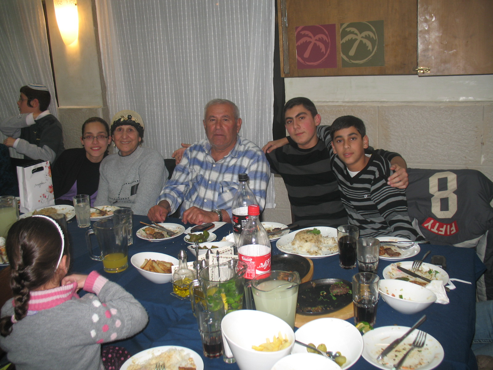

Welcom to my website!
Hope you'll enjoy ,
Moshe Yosef
!ברוכים הבאים לאתר שלי
.שמי משה יוסף,נולדתי בעירק בשנת 1946,בן שישי למשפחה בת שבעה ילדים
.כשההיתי בן ארבע עליתי לארץ יחד עם משפחתי והגענו לגן יבנה, שם גדלתי והתחנכתי עד גיל 18
.בגיל 18 התגייסתי לצבא לחטיבת תותחנים והכרתי את אשתי נצחיה
.התחתנו, ולאט לאט התרחבה משפחתנו
נולדו לנו ארבעה ילדים מקסימים-משה, רבקה, אסף ואסנת
. כמשפחה אהבנו לטייל בארץ לאורכה ולרוחבה, ללכת לים ולהפגש עם בני המשפחה המורחבת
.בארץ עבדתי כטסטר של רכבים והיום,אני נהנה מפירותי עליהם עמלתי במהלך חיי
.ברוך ה', יש לנו 19 נכדים מקסימים ו2 נינים
Web1,web2,web3 השוואה בין
| Web 3.0 | Web 2.0 | Web 1.0 | קריטריון |
|---|---|---|---|
| רשת המספקת תוכן מותאם אישית ומאפשרת קריאה וכתיבה.הדפים דינאמים | כתיבה וקריאה | קריאה בלבד ומאופיינת בדפים סטטיים | סוג הדף |
| רשת סמנטית המאופיינת בקישוריות של מידע על ידי הבנת סמנטית של הדברים באמצעות בינה מלאכותית. קיימת אינטרקציה ביו המשתמש לאתר והיא מותאמת אישית | רשת חברתית שיתופית המאפשרת אינטרקציה בין המשתמשים השונים באתר.מאפשרת שיתופיות כמו שיתוף מידע,עידכונים ואיסוף מידע קולקטיבי . השיתופיות לדוגמה מתאפשרת באתרי בלוגים | הרשת מאופיינת בעמודי בית, .ונועדת להצגה ושיתוף מידע בלבד מנהל האתר אחראי באופן בלעדי על עדכון משתמשים וניהול תוכן האתר ואין כמעט אינטרקציה משמעותית עם המשתמש | מטרה ואינטרקציה עם המשתמש |
| מנועי החיפוש אחזרו תגיות עם תוכן מיקרו. תהליך החיפוש היה אוטמטי,והחיפוש היה מדוייק יותר. בנוסף ,החיפוש לא בוצע רק לפי מילות המפתח בשאילתה אלא החיפוש יהיה סמנטי יותר(אולי תתבצע הרחבת שאילתא על ידי מילים דומות) עם משמעות דומה לכוונת המשתמש כדי להגיע לתוצאות אחזור טובות יותר | מנועי החיפוש אחזרו תגיות עם תוכן מיקרו. תהליך התיוג היה ידני,מייגע ומכסה אחוזים קטנים מאוד מהרשת | מנועי החיפוש אחזרו תגיות עם תוכן מאקרו אומנם החיפוש היה מהיר מאוד אבל פעמים רבות התוצאות לא היו מדויקות | מנועי החיפוש |
: נערוך השוואה על ידי שימוש בדוגמה הבאה
"המלצות לקונדטוריה טובה"
| Web 3.0 | Web 2.0 | Web 1.0 |
|---|---|---|
| בגרסא זו נקבל אתרים שעונים על השאילתא,חוות דעות וביקורות של אנשים על מקומות שונים ואף ,תוצאות המותאמות לנו אישית על בסיס חיפושי אוכל בעבר במנוע החיפוש בנוסף, אולי נקבל אתרים שישאלו אותנו כמה שאלות לגבי סגנון הקונדטוריה שאנו מתחברים ולפי זה נקבל המלצות על מקומות שונים | בגרסא זו יוחזרו אתרים שעונים על השאילתא ,ואף נקבל אתרים שבהם יש דיונים על קונדטוריות שונות והממולצות ביותר .כלומר נקבל חוות דעת וביקורות של אנשים על מקומות שונים | מאגר תוצאות החיפוש יהיה דפיי בית סטטים של העסקים השונים שהוחזרו. אתרים אלו תויגו במילים המתאימות לשאילתא והתוצאות שיוחזרו לא יהיו מדויקות. לדוגמה-נקבל בחלק מהתוצאות אתרים שמסבירים על ענף הקונדטוריה |